滋賀大学 自主ゼミ「サウンドプログラミング入門」 2026年度 春学期
サンプルのダウンロード方法
Mac：
Option (Alt)キーを押しながら上のリンクをクリックするWindows： リンクを右クリックして「名前を付けてリンク先を保存」
または、クリックして表示されたテキスト（文字列）をすべてコピーし、テキストエディタに貼り付けて、ファイル名を
2_envelope_fig.pd（拡張子を.pd）にして保存すれば、Plugdataで開けるようになります。
第2回では、画面上の鍵盤をクリックして手動で音を鳴らすパッチを作りました。第3回ではこれを発展させて、コンピュータに自動で演奏させる ことを目指します。
メトロノームと乱数 ― [metro] で一定間隔のトリガを作り、[rand.i] で指定した音域の中からランダムなノート番号を生成する
スケーラーサブパッチ ― 任意のMIDIノート番号を「長調」「短調」「ヨナ抜き」などのスケール上の音にスナップする部品を作る
複数スケール ― 長調・短調・ヨナ抜き・沖縄音階など、スケールサブパッチを差し替えて雰囲気を変える
複数声部化 ― [send]/[receive] で配線を整理し、シンセ部を複製して多声に発展させる
最終的には、複数の声部が同時に鳴る、ジェネレーティブな小さな音楽パッチ を完成させます。
今回作るスケーラーサブパッチは、任意のMIDIノート番号を受け取れる汎用部品 として設計します。後の回で外部の時系列データを音にするときにも、そのまま使えるようになります。
前回、[envgen~] が出力する制御信号の急激な値の変化を避けるために [lag~] を使う方法を紹介しましたが、 [envgen~] 自体に レガートモード という機能が用意されており、新しいトリガが来たときに、現在の出力値から次のエンベロープへ自然に繋ぐ ことができます。これを使えば [lag~] を挟まなくても、エンベロープの切り替わりでブツッというノイズが入るのを防げます。
そこで、[lag~ 10] を入れていた部分は削除して、代わりに [envgen~] にメッセージを送ってレガートモードのオン/オフを切り替える形に変更します。
xxxxxxxxxx[tgl]|[legato $1(|[envgen~]
[legato $1( というメッセージボックスで、$1 の部分は インレットから受け取った値に置き換わる 引数です。[tgl] はオフの時に 0、オンの時に 1 を送信するので、それぞれ [legato 0((レガートOFF)、[legato 1((レガートON) のメッセージとして [envgen~] に送られ、モードの切り替えができます。
レガートとは、音楽用語で音と音を途切れさせずに滑らかに繋いで演奏することを指します。
[envgen~]のレガートモードでは、新しいトリガが来たときに現在の出力値から次のエンベロープへ自然に繋がるため、エンベロープが切り替わる瞬間のブツッというノイズを防げます。
自動演奏のパッチは、おおまかに次のような構造で考えることができます。
[一定間隔のトリガ] → [音の高さを決める] → [音源](metro) (rand.i など) (osc~ など)
この章では、トリガと音の高さを生成する2つのオブジェクトを順に見ていきます。
[metro] は、一定間隔で bang を出力し続ける オブジェクトです。引数として間隔(ミリ秒)を指定します。
xxxxxxxxxx[metro 500] ← 500msごとに bang を出力
[metro] は、左インレットに 1(または bang)を受け取ると動作を開始し、0(または stop)を受け取ると停止します。この オン/オフを切り替えるスイッチ として利用できるのが [tgl](トグル)オブジェクトです。
[tgl] は、クリックするたびに 0と1を交互に出力 する小さな四角いGUIオブジェクトです。[tgl] はオブジェクト名に tgl と入れるか、ショートカットで Cmd/Ctrl + Shift + T で配置することができます。[metro] の左インレットに接続することで、クリックひとつでメトロノームの開始/停止を切り替えられます。
xxxxxxxxxx[tgl]↓[metro 500]↓(bang が500msごとに出力される)
トグルがオン(チェックマークが入った状態)の間、[metro] は bang を出し続けます。もう一度クリックしてオフにすると、[metro] は停止します。
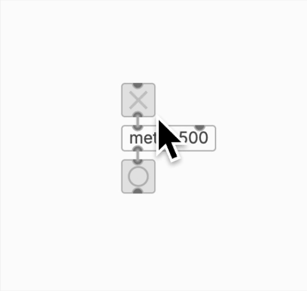
図2.3 [tgl]で[metro]をオン/オフする
[rand.i] は、bang を受け取るたびに 指定した範囲のランダムな整数 を出力するオブジェクトです。引数の指定方法は2通りあります。
xxxxxxxxxx[rand.i 12] ← 0以上、12未満のランダムな整数(0〜11)[rand.i 60 72] ← 60以上、72以下のランダムな整数(60〜71)
引数を2つ与えると、最小値と最大値を直接指定 できます。これは「音域を直接MIDIノート番号で指定する」という、音楽的にとても直感的な使い方ができます。
xxxxxxxxxx[rand.i 48 84] ← C3(48)からB5(83)までのランダムな音[rand.i 60 72] ← C4(60)からB4(71)まで(1オクターブ)[rand.i 30 80] ← 低音域から高音域まで広く
補足:
[rand.i]の.iは integer(整数)の意味です。引数なしで[random]を使う流派もありますが、plugdataでは[rand.i]がシンプルで分かりやすいのでこちらを使います。
[metro]、[tgl]、[rand.i] を組み合わせて、まずは 半音単位で完全にランダムな自動演奏 を作ってみましょう。前回のパッチのキーボード部分をランダムな演奏のプログラムに置き換えます。
xxxxxxxxxx[tgl]↓[metro 500]↓[rand.i 60 72]↓ ↓[mtof] [bng]↓ ↓osc~へ envgen~へ
このパッチを動かしてみると、確かに自動で演奏されるのですが、半音単位で完全にランダム なので、音楽的にはかなり不協和に聞こえます。[rand.i 60 72] の出力には、ド#・レ#・ファ#・ソ#・ラ#といった黒鍵の音も同じ確率で含まれてしまうためです。
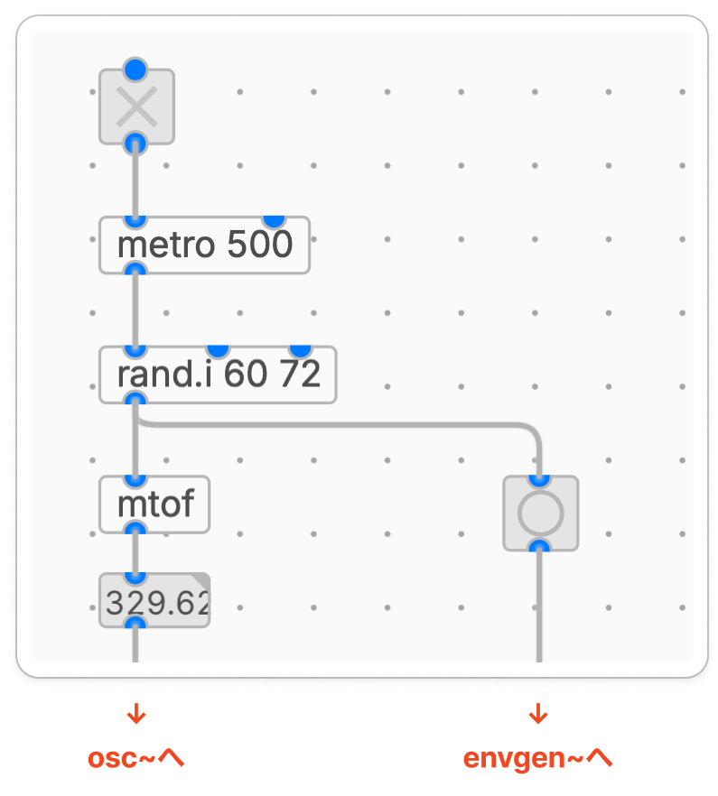
図2.4 [rand.i]による12音のランダムな演奏
ここからは、この「ランダムすぎる音」を整える仕組み ― スケーラー ― を作っていきます。
第2回で扱ったように、MIDIノート番号は 0〜127の整数で音の高さを表す 仕組みです。中央のド(C4)が60、その1つ上の半音(C#4)が61、というように、1ずつ増えるごとに半音上がっていきます。
そして、12ずつ増えるごとに同じ音名が1オクターブ上に繰り返されます。
| MIDIノート番号 | 音名 | 備考 |
|---|---|---|
| 48 | C3 | 1オクターブ下のド |
| 60 | C4 | 中央のド |
| 72 | C5 | 1オクターブ上のド |
| 84 | C6 | 2オクターブ上のド |
MIDIノート番号には次のような 規則的な構造 があります。
12で割った余り → オクターブ内のどの音か(0=ド, 2=レ, 4=ミ, …)
12で割った商 → 何オクターブ目か
具体例で確認してみましょう。MIDIノート番号 67 はソ(G4)ですが、これを12で割って分解すると:
xxxxxxxxxx67 ÷ 12 = 5 余り 7
商の 5 → オクターブの位置(C0から数えて5番目のオクターブ、つまりC4の領域)
余りの 7 → オクターブ内の位置(ドから7半音上 = ソ)
別の例で、MIDIノート番号 76 はミ(E5)ですが:
xxxxxxxxxx76 ÷ 12 = 6 余り 4
商の 6 → C5の領域
余りの 4 → ドから4半音上 = ミ
このように、「12で割った余り(オクターブ内の位置)」と「12で割った商(オクターブ番号)」に分解できる という性質を使うと、「オクターブはそのままに、オクターブ内の位置だけスケールに合わせて変える」ということができます。
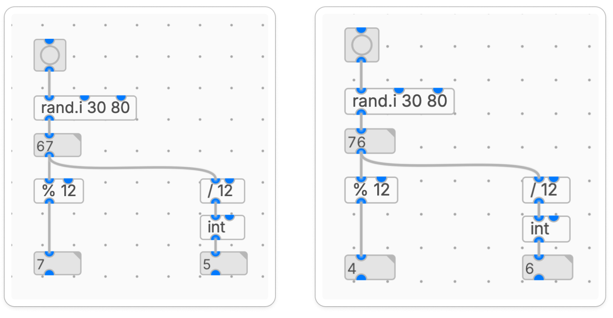
図3.2 rand.iのノート番号からドレミ(0~11)とオクターブを取得
パッチが大きくなってくると、画面が混雑して見通しが悪くなります。また、「スケール変換」のような 特定の機能のまとまり を一度作ったら、別のパッチからも再利用したくなります。
そこで使うのが サブパッチ(subpatch)です。サブパッチは、1つのオブジェクトとして画面に表示される、内部に別のパッチを持つ箱 のことです。
サブパッチを作るには、オブジェクトボックスに次のように記述します。
xxxxxxxxxx[pd scale]
pd は「ここはサブパッチですよ」という宣言
scale はサブパッチの名前(任意)
このオブジェクトを作成してダブルクリックすると、サブパッチのウィンドウが新たに表示されます。このウィンドウ内で内部の処理を作成していきます。サブパッチでは [inlet] と [outlet] を配置することで、それぞれが親パッチ側の [pd scale] のインレット・アウトレットに対応します。
xxxxxxxxxxサブパッチ内部:[inlet] ← 親パッチからの入力を受け取る↓(何らかの処理)↓[outlet] ← 親パッチへ出力を返す
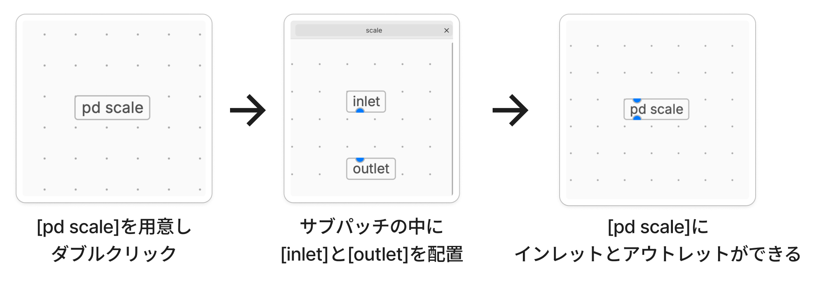
図4.2 [pd scale]サブパッチの作成手順
ここから作るスケーラーは、次のような仕様の 汎用部品 です。
xxxxxxxxxx入力: 任意のMIDIノート番号(整数)出力: そのスケールに最も近い構成音のMIDIノート番号
つまり、半音単位の自由な値(例えば61番=ド#)を受け取って、長調のスケール上の音(例えば60番=ド、または62番=レ)に スナップ して返します。
3.2節で見たように、MIDIノート番号は 「÷12の商(オクターブ部分)」と「%12の余り(音度部分)」 に分解できます。スケーラーの中ではこれを利用して、
入力を [% 12] と [/ 12] で オクターブ部分と音度部分に分解
音度部分(0〜11)だけをスケール上の値に変換
オクターブ部分はそのまま戻して 足し合わせる
という処理を行います。
xxxxxxxxxxスケーラー内部の構造:[inlet]├──→ [% 12] → [pd scale_major] ──┐ (0〜11 をスケール内の半音数に変換)└──→ [/ 12] → [int] → [* 12] ────┤ (オクターブ部分を取り出して戻す)↓[+]↓[outlet]
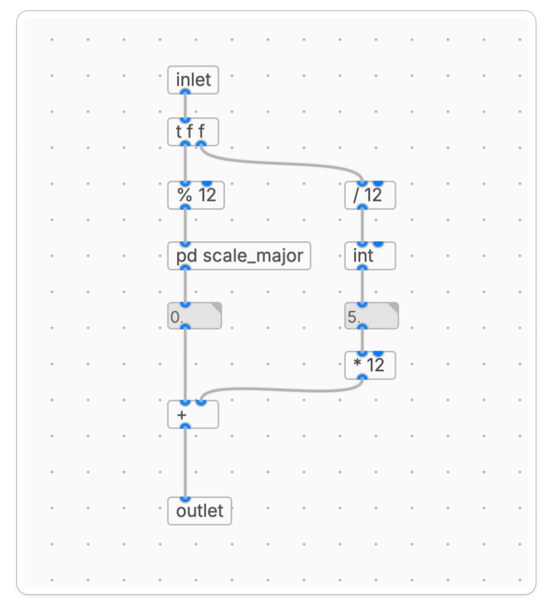
図4.3 スケール用のサブパッチを準備
肝心の 音度部分(0〜11)をスケール上の値に変換する 部分を作ります。長調(Cメジャー)の音階は、ルートからの半音数で表すと次のようになります。
| オクターブ内の位置 | 音名 | スケール上の音 |
|---|---|---|
| 0 | ド (C) | 0 |
| 1 | ド# (C#) | 0 にスナップ(またはどちらか近い方) |
| 2 | レ (D) | 2 |
| 3 | レ# (D#) | 2 にスナップ |
| 4 | ミ (E) | 4 |
| 5 | ファ (F) | 5 |
| 6 | ファ# (F#) | 5 にスナップ |
| 7 | ソ (G) | 7 |
| 8 | ソ# (G#) | 7 にスナップ |
| 9 | ラ (A) | 9 |
| 10 | ラ# (A#) | 9 にスナップ |
| 11 | シ (B) | 11 |
つまり、黒鍵にあたる音(1, 3, 6, 8, 10)を「近い白鍵の音」にスナップするわけです。どちらに丸めるかは厳密に決める必要はないので、ひとまずどちらかの白鍵に決めてしまいます。
この変換を [select] オブジェクトで実装します。[select] は、第2回で [sel 0] として使ったものと同じオブジェクトで、引数に複数の値を指定すると、入力と一致する値ごとに別々のアウトレットから bang を出力します。
xxxxxxxxxx[select 0 1 2 3 4 5 6 7 8 9 10 11]
各アウトレットに長調に対応したメッセージボックスを繋げて（ [0(、[2(、[4(、[5(、[7(、[9(、[11(） 、すべてを [outlet] に集約します。
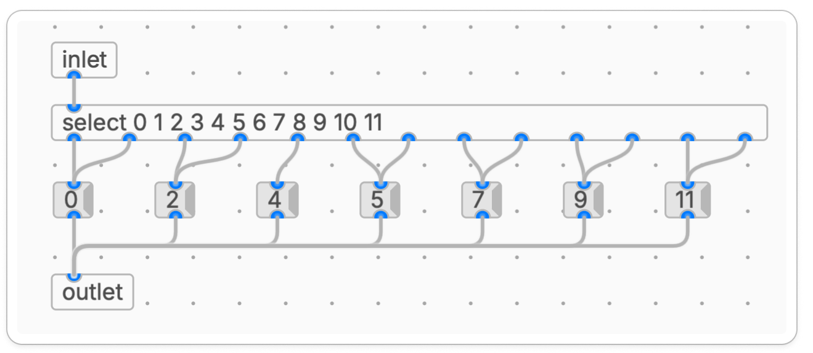
図4.4 [sel]で0~11の値を分岐させ、長調の音階に対応させる
スケーラーが完成したら、[rand.i] の経路に組み込んで動作を確認しましょう。2.5節で作った半音単位ランダム自動演奏のパッチに、[pd scale_major] を挿入するだけです。
xxxxxxxxxx[tgl]↓[metro 500]↓[rand.i 60 72] ← C4〜B4の範囲でランダム↓[pd scale_major] ← スケール上の音にスナップ↓[mtof]↓
これを動かすと、2.5節と違って 黒鍵にあたる音(ド#・レ#・ファ#・ソ#・ラ#)は鳴らず、白鍵の音だけが鳴る はずです。耳で聞いても、半音単位ランダムの不協和な響きが消えて、長調のスケール上を行き来する音楽的な流れになっているのが分かります。
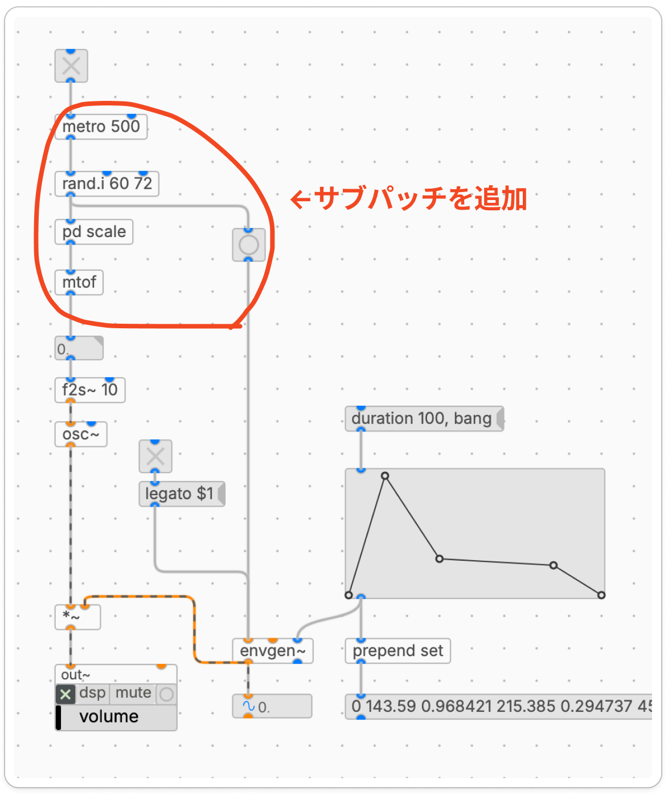
図4.5 スケーラーをシンセパッチに追加
耳で聞くだけでなく、どの音が鳴っているか目で見て確認 できるようにしましょう。第2回で使った [keyboard] を出力側にも置いて、鳴っている音を鍵盤上で光らせます。
ただし、[keyboard] は単にノート番号を受け取るだけでは光りません。[keyboard] は note-on(押した)と note-off(離した)の両方の情報 を必要とするからです。これを生成してくれるのが [makenote] です。
[makenote] の役割
[makenote] は、ノート番号を受け取ると note-onを出力し、指定した時間後に自動でnote-offを出力する オブジェクトです。
xxxxxxxxxx[makenote 100 200]
引数は次の2つです。
| 引数 | 意味 | 例 |
|---|---|---|
| 1つめ | ベロシティ(音の強さ、0〜127) | 100 |
| 2つめ | デュレーション(発音時間、ms) | 200 |
左インレットにノート番号(例:60)を入れると:
すぐに: 左アウトレットから 60(ノート番号)、中アウトレットから 100(ベロシティ)が出力 → note-on
200ms後: 左アウトレットから 60、中アウトレットから 0(ベロシティ0) → note-off
この出力を [keyboard] の左インレット(ノート番号)と中インレット(ベロシティ)に繋ぐと、鳴っている間だけ該当する鍵盤が光る ようになります。
動作確認パッチ
[osc~] の経路はそのままに、視覚化用に [makenote] と [keyboard] を分岐させて 追加します。
xxxxxxxxxx[tgl]↓[metro 500]↓[rand.i 60 72]↓[pd scale_major]↓├──────────────────┐↓ ↓[makenote 100 200] [mtof]↓ ↓[keyboard] [osc~]↓[out~]
このパッチを動かすと、音が鳴るタイミングに合わせて [keyboard] 上の対応する鍵盤が光ります。スケーラーが正しく動いていれば、光るのは 白鍵だけ(長調のスケール構成音のみ)になっているはずです。[pd scale_major] を外して直接 [rand.i] を繋ぐと、今度は黒鍵も含めて全部の鍵盤がランダムに光るので、スケーラーの効果が視覚的に分かります。
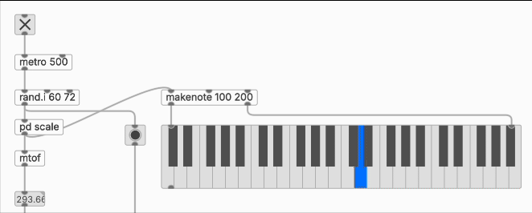
図4.6 keyboardで確認
音域も [rand.i 48 72](C3〜C5)のように好きな範囲に変えて、鍵盤上を音がどう動くか観察してみましょう。
動作確認ができたら、いよいよ [rand.i] の経路にスケーラーを組み込みます。
xxxxxxxxxx[tgl]↓[metro 500]↓[rand.i 48 84] ← 音域はMIDIノート番号で自由に指定↓[pd scale]↓
これで、指定した音域の中から、長調のスケール上の音だけが鳴る 自動演奏ができました。音域は [rand.i 48 72](C3〜C5)のように好きな範囲に変えて遊んでみましょう。
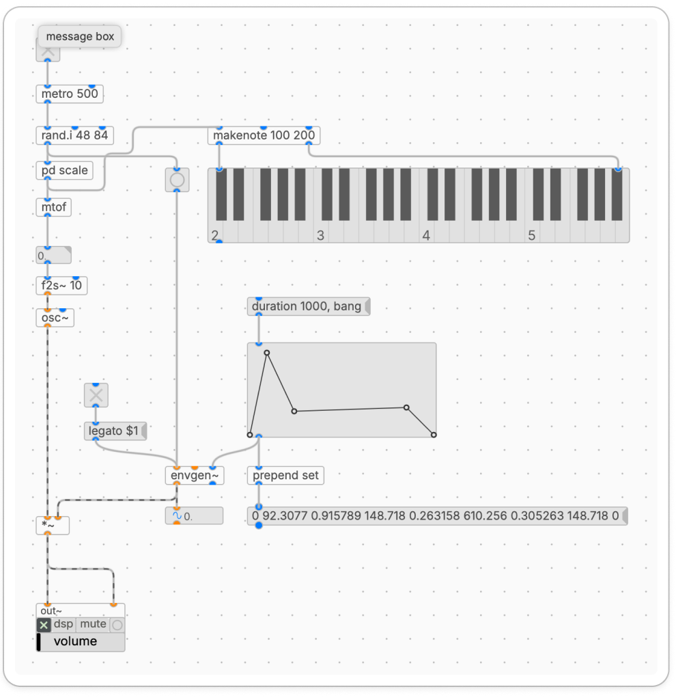
図4.7 スケーリングを組み込んだパッチの全体像
同じ仕組みで、別の音階のサブパッチも簡単に作れます。[pd scale_major] をコピーして、メッセージボックスの値を変えるだけです。半音数の対応は次の通りです。
| スケール | 構成音(半音数) | 特徴 |
|---|---|---|
| 長調(major) | 0, 2, 4, 5, 7, 9, 11 | 明るく安定した響き |
| 短調(natural minor) | 0, 2, 3, 5, 7, 8, 10 | 暗く哀愁のある響き |
| 長調ヨナ抜き | 0, 2, 4, 7, 9 | 4番目(ファ)と7番目(シ)を抜いた5音音階。日本の唱歌・童謡に多い |
| 短調ヨナ抜き | 0, 2, 3, 7, 8 | 短調から同様に抜いた5音音階。演歌や民謡に近い響き |
| 沖縄音階 | 0, 4, 5, 7, 11 | 沖縄民謡で使われる独特な5音音階 |
スケーラーの中では、構成音に含まれない半音(例えばヨナ抜きの場合のド#・ファ・ファ#・シなど)を、近い構成音にスナップ します。具体的にどの音にスナップするかは厳密なルールはなく、雰囲気で決めて構いません。
例えば長調ヨナ抜き(0, 2, 4, 7, 9)の場合、スケーラー内部のメッセージボックスは次のような感じになります(一例)。
| オクターブ内の位置 | スナップ先 |
|---|---|
| 0 | 0 |
| 1 | 0 |
| 2 | 2 |
| 3 | 2 |
| 4 | 4 |
| 5 | 4 |
| 6 | 7 |
| 7 | 7 |
| 8 | 7 |
| 9 | 9 |
| 10 | 9 |
| 11 | 9 |
補足: スナップ先を変えるだけで、同じ「ヨナ抜き」でも少し雰囲気が変わります。「上に丸める」か「下に丸める」かを変えてみて、好みの響きを探してみるのも面白い実験です。
複数のスケール用サブパッチ([pd scale_major]、[pd scale_minor]、[pd scale_yonanuki] など)を用意しておけば、接続を差し替えるだけで音楽の雰囲気が一変 します。
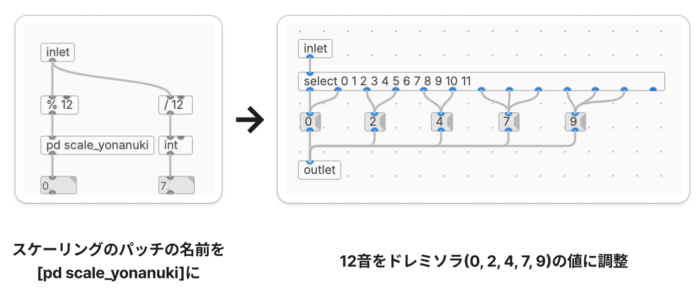
図5.2 スケーリングのサブパッチを変更する
ここまでで作ったのは、1つの音が一定間隔で鳴り続ける単声(モノフォニック)のパッチ でした。これを 複数並べることで、複数の音が同時に演奏される 多声(ポリフォニック) のパッチ に発展させられます。
ただ、これまでのように [metro] から [rand.i] までを線で直接つないだまま声部を増やそうとすると、線がどんどん入り組んで読めなくなってしまいます。3声、4声と増やすことを考えると、配線そのものを整理する仕組み が欲しくなります。
そこで使うのが [send]/[receive] という、ケーブルを使わずにデータを送受信できる オブジェクトです。
[send] と [receive] は、同じ名前を指定したペア同士で、線をつながずに値をやり取りできる オブジェクトです。「無線」のようなイメージで使えます。
xxxxxxxxxx[bang]↓[send note_bang] (送信側)[receive note_bang] (受信側、別の場所に置いてOK)↓[bng]
[send note_bang] に流れ込んだ値は、同じパッチ内のすべての [receive note_bang] から同時に出力されます。これを使うと、
1つの送信元から、複数の受信先へ同じ信号を配る
離れた場所のオブジェクト同士を、線でつながずに繋ぐ
ということが簡単にできます。
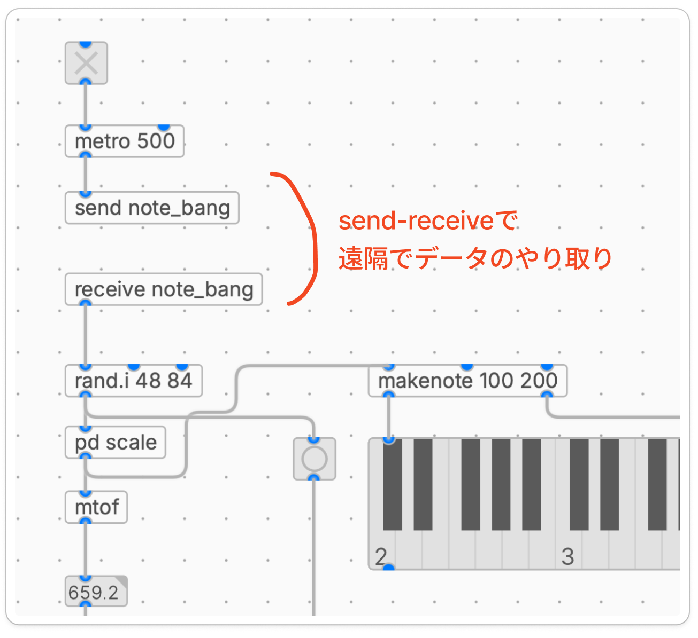
図6.2 send/receiveを使ってデータのやり取り
補足:
[send]/[receive]は省略形で[s]/[r]とも書けます。同じ名前のペアであれば動作は同じです。
音声信号用の [send~]/[receive~]
ここまでに出てきたメッセージ用の [send]/[receive] には、音声信号(~ がついた信号)版 もあります。それが [send~]/[receive~] です。[osc~] の出力のような連続信号を、線をつながずに別の場所の [out~] に届けることができます。
| オブジェクト | 送る対象 |
|---|---|
[send]/[receive] | メッセージ(数値、bang、リスト) |
[send~]/[receive~] | 音声信号 |
注意: [send~]/[receive~] は、メッセージ用の [send]/[receive] とは仕様が異なり、同じ名前の [send~] を複数置くことができません。そのため、シンセ部を複製して多声化する場合は、[send~ synth1]/[receive~ synth1]、[send~ synth2]/[receive~ synth2] のように 声部ごとに別の名前を付ける 必要があります。受け取り側はそれぞれの [receive~] を [+~] で足し合わせて [out~] に送ります。
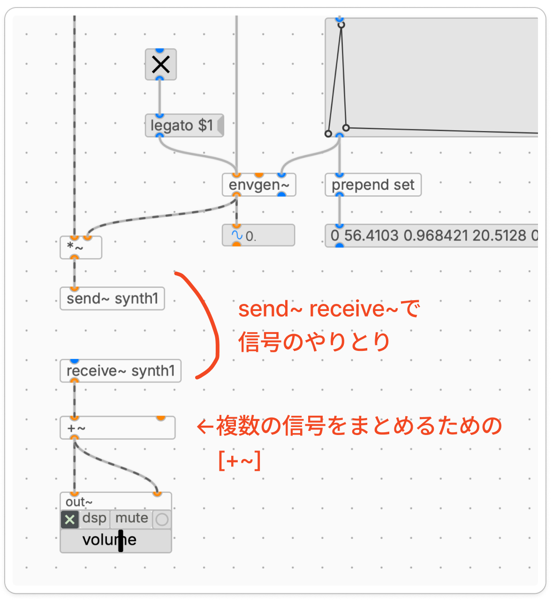
図6.3 send~/receive~を使って信号のやり取り
[send]/[receive] を使うと、これまでひと続きだったパッチを 役割ごとのブロックに分割 できます。今回は次のような3つのブロックに分けます。
xxxxxxxxxx┌─────────────────────────────────────────┐│ トリガ部 ││ [tgl] → [metro 500] → [send note_bang]│└─────────────────────────────────────────┘↓ (無線)┌─────────────────────────────────────────┐│ シンセ部(これを複製して多声化する) ││ [receive note_bang] ││ ↓ ││ [rand.i 48 84] ││ ↓ ││ [pd scale] ││ ↓ ││ [mtof] → [osc~] → [*~ envgen~] ││ ↓ ││ [send~ output] │└─────────────────────────────────────────┘↓ (無線)┌─────────────────────────────────────────┐│ 出力部 ││ [receive~ output] → [out~] │└─────────────────────────────────────────┘
このように分割すると、
トリガ部 はテンポを決める「指揮者」
シンセ部 は音を作る「演奏者」
出力部 は音を出す「スピーカー」
という役割分担になり、見通しが良くなります。そして何より、シンセ部だけを複製すれば、1つの指揮者で複数の演奏者を同時に動かせる ようになります。
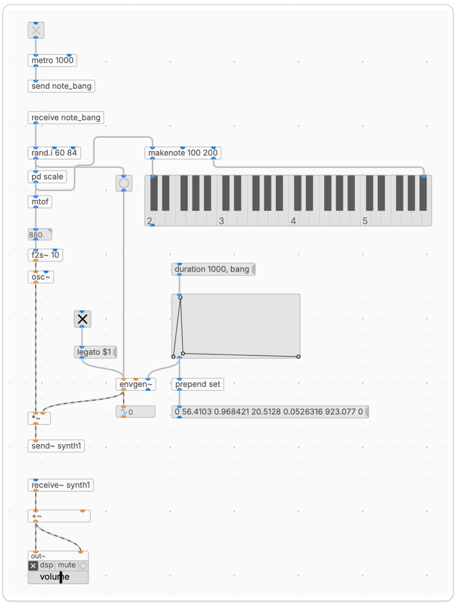
図6.3 send/receiveを使って3つのブロックに分割したパッチ
ブロック分割ができたら、いよいよ多声化です。やることは単純で、シンセ部のブロックをまるごとコピー&ペーストするだけ です。
plugdataでは、
シンセ部のオブジェクトを ドラッグで囲んで選択
Cmd/Ctrl + C でコピー
Cmd/Ctrl + V でペースト
もしくは
シンセ部のオブジェクトを ドラッグで囲んで選択
囲んだ範囲をAlt + ドラッグ & ドロップでコピー&ペースト
これで2声目のシンセ部が新しく作られます。複製したシンセ部も同じ [receive note_bang] で同じトリガを受け取り、同じ [send~ output] で同じ出力ブロックに音を送るので、追加で線を引く必要はありません。
x[receive note_bang] ─┬─→ シンセ部1 ─→ [send~ synth1]│└─→ シンセ部2 ─→ [send~ synth2] (複製した2声目)|└─→ シンセ部3 ─→ [send~ synth3] (複製した3声目)・・・
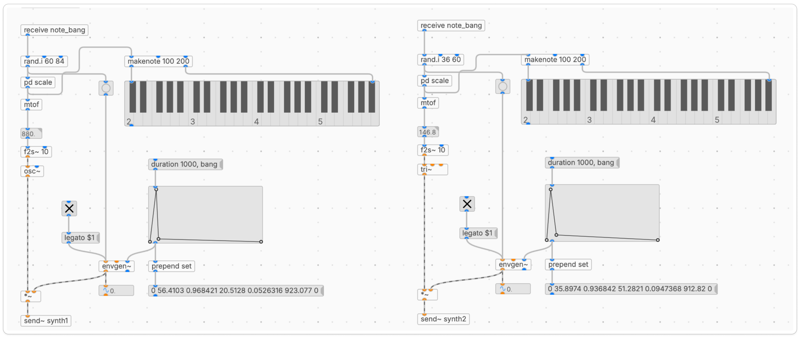
図6.4 シンセ部分を複製して増やす
複製しただけでは、3つの声部がすべて同じ動きをしてしまうので面白くありません。声部間で少しずつパラメータを変える ことで、それぞれに個性を持たせます。
今回は、3つの声部を 音域で住み分けさせる ようにしてみましょう。
| 声部 | 音域([rand.i] の範囲) | 役割 |
|---|---|---|
| 声部1 | [rand.i 60 84](C4〜C6) | 中音〜高音、メロディの中心 |
| 声部2 | [rand.i 36 60](C2〜C4) | 低音〜中音、中音域を支える |
| 声部3 | [rand.i 36 48](C2〜C3) | 低音、ベースライン |
このように音域を 重ならないように分けて配置する と、それぞれの声部が独立して聞こえやすく、和音としてのまとまりも生まれます。オーケストラでソプラノ・アルト・テナー・バスが役割分担するのと同じ考え方です。
音域以外にも、変えると面白いポイントがあります。
音色([osc~]/[tri~]/[saw~]/[square~] など): 例) 高音側はサイン波で澄んだ音、低音側は三角波で柔らかい音
エンベロープの長さ: 例) 高音は短く歯切れよく、低音は長く伸ばす
テンポ: [metro] の第2インレットにメッセージボックスや数値ボックスを繋げば、演奏中に間隔を動的に変えられます。間隔を短くすれば早い刻み、長くすればゆったりとした演奏に。
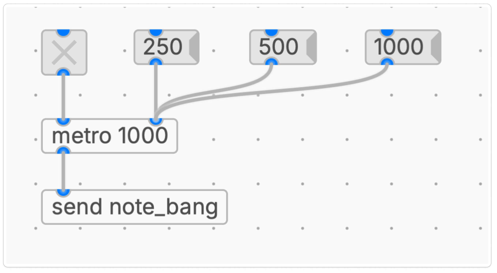
図6.5 [metro]のテンポをメッセージボックスで切り替え
逆に、変えないほうが良いもの もあります。
スケール: 全声部で同じ [pd scale_major] を使う
重要: 違うスケール(例: 長調 + 短調)を同時に重ねると、それぞれが違う調号で動いている状態になり、不協和音が目立ってしまいます。全声部が同じスケーラーを通っている ことで、お互いに音楽的に協和します。
ここまでをまとめると、3声の自動演奏パッチは次のような全体構成になります。
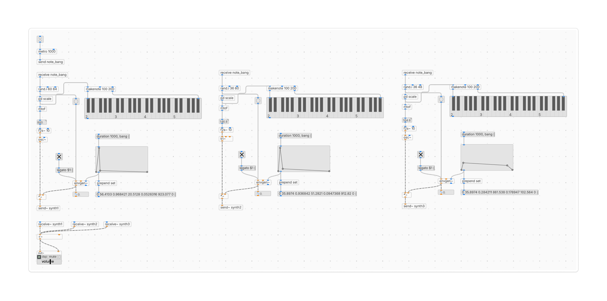
図6.6 完成系のポリフォニックパッチ
声部を増やしたければ、同じ要領でシンセ部をさらに複製するだけ です。4声、5声と増やしても、[send]/[receive] で繋がっているので配線が混乱しません。
[metro] による一定間隔のトリガ生成と、[tgl] によるオン/オフ制御
[rand.i 最小 最大] による 音域を直接指定した 乱数生成
MIDIノート番号の 「÷12の商=オクターブ」「%12の余り=音度」 という構造
サブパッチ [pd 〜] の作り方と、[inlet]/[outlet] による親パッチとの接続
[% 12] と [/ 12] を使った 任意のMIDI値を受け取れる汎用スケーラー の実装
[select] を使ったスケール上の音へのスナップ
長調・短調・ヨナ抜き・沖縄音階など、音楽的なスケールの違い
[send]/[receive] および [send~]/[receive~] による 配線の無線化
シンセ部の複製による多声化と、全声部で同じスケーラーを使う ことによる音楽的なまとまり